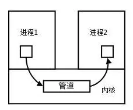

为了保护操作系统中进程互不干扰，需要使用进程隔离技术，以防不同进程能够修改其他进程数据。但进程之间又不能完全隔离，需要一定的通信手段，于是开发出了进程间通信(IPC,
InterProcess Communication) 技术。
管道(Pipe)
管道是最基本的通信机制，实质是一个半双工的通信方式，即数据只能单向流通，每次从头读取，向尾写入，并且遵循
FIFO(First In First Out)
原则，以字节流 的方式进行传输，就仿佛一个单向队列。并且管道双方必须均处于“在线”状态，一旦一方退出，另一方也自动断开。
如果双方相互通信时，则需要建立两个管道。
根据是否存在于文件系统 中，又可将管道分为匿名管道 和命名管道 两种。
“名 ”指的就是路径名啦。
匿名管道
Linux 中可以通过函数 int pipe(int fd[2])
建立匿名管道，其中 fd[0] 为读取端，fd[1]
为写入端，两个都是文件描述符 ，从而可以用
read()/write() 系统调用进行数据传输。比如下面这段代码：
1 2 3 4 5 6 7 8 9 10 11 12 13 14 15 16 17 18 19 20 21 22 23 24 25 26 27 28 29 30 31 32 33 34 35 #include <stdio.h> #include <unistd.h> #include <string.h> int main () { int fd[2 ]; int ret = pipe(fd); if (ret < 0 ) { printf ("Pipe Create Failed!\n" ); } pid_t id = fork(); if (id < 0 ) { printf ("Fork Failed\n" ); } else if (id == 0 ) { close(fd[0 ]); int i = 0 ; char * msg = "I'm child" ; while (i++ < 100 ) { write(fd[1 ], msg, strlen (msg)); sleep(1 ); } } else { close(fd[1 ]); int i = 0 ; char msg[100 ]; while (i++ < 100 ) { memset (msg, '\0' , sizeof (msg)); read(fd[0 ], msg, sizeof (msg)); printf ("%s\n" , msg); } } return 0 ; }
事实上，匿名管道并不 位于文件系统中，它本质上是一个位于内核空间 中的缓冲区，只不过将两端以“文件”的形式提供了数据读写的渠道。如果缓冲区已满，则阻塞写入；如果缓冲区为空，则阻塞读取。

同时，读写端的文件描述符仅仅位于通信双方公共祖先进程的地址空间内部，也是因为如此，匿名管道仅适用于父子进程 这种有“亲缘关系”（或称相关）的进程之间的通信，而无法跨进程通信。
毕竟调用 fork() 会进行一次完整的拷贝操作，也就会复制该
fd[]。
同样，一旦进程销毁，该管道也随之被销毁。也就是说，匿名管道的生命周期完全由进程决定 。
命名管道
那么为了实现跨进程通信，不如就把上文中的缓冲区改为实际的文件，令其位于文件系统中，这样一来只要知道该管道文件 的路径，就可以在任何进程之间进行通信了。
Linux 中可以通过函数
int mkfifo(const char *path, mode_t mode)
建立命名管道，其中 path 指明文件路径，mode
指明管道文件的存取权限。比如下面这段代码：
1 2 3 4 5 6 7 8 9 10 11 12 13 14 15 16 17 18 19 20 21 22 23 24 25 26 27 28 #include <stdio.h> #include <unistd.h> #include <string.h> #define _PATH_NAME_ "/tmp/file.tmp" #define _SIZE_ 100 int main () { int ret = mkfifo(_PATH_NAME_, S_IFIFO | 0666 ); if (ret == -1 ) { printf ("Make File Error\n" ); return -1 ; } char buf[_SIZE_] = {0 }; int fd = open(_PATH_NAME_, O_WRONLY); while (true ) { fget(buf, sizeof (buf)-1 , stdin ); int ret = write(fd, buf, strlen (buf)+1 ); if (ret < 0 ) { printf ("Write Error\n" ); break ; } } close(fd); return 0 ; }
1 2 3 4 5 6 7 8 9 10 11 12 13 14 15 16 17 18 19 20 21 22 23 24 25 26 27 #include <stdio.h> #include <unistd.h> #include <string.h> #define _PATH_NAME_ "/tmp/file.tmp" #define _SIZE_ 100 int main () { int fd = open(_PATH_NAME_, O_RDONLY); if (fd < 0 ) { printf ("Open File Error\n" ); return 1 ; } char buf[_SIZE_] = {0 }; while (true ) { int ret = read(fd, buf, sizeof (buf)); if (ret < 0 ) { printf ("Read Error\n" ); break ; } printf ("%s\n" , buf); } close(fd); return 0 ; }
服务端利用系统函数 mkfifo() 创建一个名为
file.tmp
的文件作为管道并写入。客户端同样也能打开该文件进行读取。而它们却是无关进程。
信号(Signal)
信号是一种软中断，采用异步通信方式，内核可以利用信号来通知用户进程发生了哪些系统事件，一般源于硬件方式 （用户按下
Ctrl+C
键）或软件方式 （系统调用产生信号）
Linux 中共定义了 64 种信号，分为以下两种：
不可靠信号 ：不支持排队，信号可能会丢失，发送多次相同的信号，进程只能收到一次.
信号值取值区间为 1~31；可靠信号 ：支持排队，信号不会丢失，发多少次，就可以收到多少次，信号值取值区间为
32~64；
常见信号
SIGHUP 用户从终端注销，所有已启动进程都将收到该进程。系统缺省状态下对该信号的处理是终止进程
SIGINT 程序终止信号。程序运行过程中，按
Ctrl+C 键将产生该信号
SIGQUIT 程序退出信号。程序运行过程中，按
Ctrl+\ 键将产生该信号
SIGBUS / SIGSEGV 进程访问非法地址
SIGFPE 运算中出现致命错误，如除零操作、数据溢出等
SIGKILL 用户终止进程执行信号。执行
kill -9 发送该信号
SIGTERM 结束进程信号。执行 kill pid
发送该信号
SIGALRM 定时器信号
SIGCHLD 子进程退出信号。如果其父进程没有忽略该信号也没有处理该信号，则子进程退出后将形成僵尸进程
Linux 信号相关数据结构
Linux 在进程管理结构 task_struct
中定义了信号相关的变量。
1 2 3 4 5 6 7 8 9 struct task_struct { ... int sigpending; ... struct signal_struct *sig ; sigset_t blocked; struct sigpending pending ; ... }
1 2 3 4 5 6 7 8 9 10 11 12 13 14 15 16 17 18 19 20 21 22 23 24 25 26 27 28 29 30 #define _NSIG 64 struct signal_struct { atomic_t count; struct k_sigaction action [_NSIG ]; spinlock_t siglock; }; typedef void (*__sighandler_t ) (int ) ;struct sigaction { __sighandler_t sa_handler; unsigned long sa_flags; void (*sa_restorer)(void ); sigset_t sa_mask; }; struct k_sigaction { struct sigaction sa ; }; struct sigqueue { struct sigqueue *next ; siginfo_t info; }; struct sigpending { struct sigqueue *head , **tail ; sigset_t signal; };
信号发送流程
以 kill() 为例，其函数原型为
int kill(pid_t pid, int sig)。
当源进程(src)调用 kill()
打算将目的进程(dst)给杀掉时，该系统调用会进一步调用内核函数
sys_kill()：
1 2 3 4 5 6 7 8 9 10 11 12 13 14 15 16 17 18 19 20 21 22 23 24 25 26 27 28 29 30 31 32 33 34 35 36 37 38 asmlinkage long sys_kill (int pid, int sig) { struct siginfo info ; info.si_signo = sig; info.si_errno = 0 ; info.si_code = SI_USER; info.si_pid = current->pid; info.si_uid = current->uid; return kill_something_info(sig, &info, pid); } static int kill_something_info (int sig, struct siginfo *info, int pid) { if (!pid) { return kill_pg_info(sig, info, current->pgrp); } else if (pid == -1 ) { int retval = 0 , count = 0 ; struct task_struct * p ; read_lock(&tasklist_lock); for_each_task(p) { if (p->pid > 1 && p != current) { int err = send_sig_info(sig, info, p); ++count; if (err != -EPERM) retval = err; } } read_unlock(&tasklist_lock); return count ? retval : -ESRCH; } else if (pid < 0 ) { return kill_pg_info(sig, info, -pid); } else { return kill_proc_info(sig, info, pid); } }
从函数 kill_something_info()
可以得知，信号发送后具体的处理流程与 dst 的 pid
有很大关系，具体为：
pid>0 时：直接发送给 pid
对应的进程；pid=0 时：发送给所有与 src 属同一个使用组的进程；pid=-1 时：发送给 src
有权给其发送信号的所有进程，除了进程 1(init);pid<-1 时：发送给 -pid 为组标识的进程；
这里只讨论第一种情况。当 pid>0 时，调用
kill_proc_info() 函数，通过 send_sig_info()
发送信号。
1 2 3 4 5 6 7 8 9 10 11 12 13 14 15 16 17 18 19 20 21 22 23 24 25 26 27 28 29 30 31 32 33 34 35 36 37 38 39 40 41 42 43 44 45 46 47 48 49 50 51 52 inline int kill_proc_info (int sig, struct siginfo *info, pid_t pid) { int error; struct task_struct *p ; read_lock(&tasklist_lock); p = find_task_by_pid(pid); error = -ESRCH; if (p) { error = send_sig_info(sig, info, p); } read_unlock(&tasklist_lock); return error; } int send_sig_info (int sig, struct siginfo *info, struct task_struct *t) { unsigned long flags; int ret; ret = -EINVAL; if (sig < 0 || sig > _NSIG) goto out_nolock; ret = -EPERM; if (bad_signal(sig, info, t)) goto out_nolock; ret = 0 ; if (!sig || !t->sig) goto out_nolock; spin_lock_irqsave(&t->sigmask_lock, flags); handle_stop_signal(sig, t) if (ignored_signal(sig, t)) goto out; if (sig < SIGRTMIN && sigismember(&t->pending.signal, sig)) goto out; ret = deliver_signal(sig, info, t); out: spin_unlock_irqrestore(&t->sigmask_lock, flags); if ((t->state & TASK_INTERRUPTIBLE)&& signal_pending(t)) wake_up_process(t); out_nolock: return ret; }
至此，发送信号的流程已完成。
信号处理流程
此时此刻信号已经发送给目标进程，为了尽快让信号得到处理，Linux
把信号处理过程放置在进程从内核态返回到用户态前 ，然后检查
sigpending 是否为 1，若是，就调用 do_signal()
函数进行处理。
1 2 3 4 5 6 7 8 9 10 11 12 13 14 15 16 17 18 19 20 21 22 23 24 25 26 27 28 29 30 31 32 33 34 35 36 37 38 39 40 41 42 43 44 45 46 47 48 49 50 51 52 53 54 55 56 57 58 59 60 61 62 63 64 65 66 67 68 69 70 71 72 73 74 75 76 77 78 79 int do_signal (struct pt_regs *regs, sigset_t *oldset) { siginfo_t info; struct k_sigaction *ka ; if ((regs->xcs & 3 )!= 3 ) return 1 ; if (!oldset) oldset = ¤t->blocked; for (;;) { unsigned long signr; spin_lock_irq(¤t->sigmask_lock); signr = dequeue_signal(¤t->blocked, &info); spin_unlock_irq(¤t->sigmask_lock); if (!signr) break ; ka = ¤t->sig->action[signr-1 ]; if (ka->sa.sa_handler == SIG_IGN) { if (signr != SIGCHLD) continue ; while (sys_wait4(-1 , NULL , WNOHANG, NULL )> 0 ) ; continue ; } if (ka->sa.sa_handler == SIG_DFL) { int exit_code = signr; if (current->pid == 1 ) continue ; switch (signr) { case SIGCONT: case SIGCHLD: case SIGWINCH: continue ; case SIGTSTP: case SIGTTIN: case SIGTTOU: if (is_orphaned_pgrp(current->pgrp)) continue ; case SIGSTOP: current->state = TASK_STOPPED; current->exit_code = signr; if (!(current->p_pptr->sig->action[SIGCHLD-1 ].sa.sa_flags & SA_NOCLDSTOP)) notify_parent(current, SIGCHLD); schedule(); continue ; case SIGQUIT: case SIGILL: case SIGTRAP: case SIGABRT: case SIGFPE: case SIGSEGV: case SIGBUS: case SIGSYS: case SIGXCPU: case SIGXFSZ: if (do_coredump(signr, regs)) exit_code |= 0x80 ; default : sigaddset(¤t->pending.signal, signr); recalc_sigpending(current); current->flags |= PF_SIGNALED; do_exit(exit_code); } } ... handle_signal(signr, ka, &info, oldset, regs); return 1 ; } ... return 0 ; }
值得注意的是，用户定义的处理方法代码位于用户态，而在运行这段系统函数期间
CPU
还处于内核态，只能先返回用户态执行用户态代码，再回到内核态做后续工作。
消息队列(Msg Queue)
管道的一个劣势在于，数据都是以字节流进行传输，没有格式一说，这就要求管道的读取方和写入方必须事先约定好数据的格式与长度，比如多少字节算作一个消息/命令/记录等等。
为了打破这一限制，诞生了消息队列。其本质上是内核中的链表，每个节点是一个具有特定格式 的消息，和
C++ 中的 std::list<Message>
很像。不同的队列以不同的队列标识符(qid) 来区分，只有内核重启或显式删除后相关队列才会被移除。
和管道相同之处在于，如果管道/队列存放的数据/消息满了，写会被阻塞，读同理。
不同之处在于，虽然写都是写到末尾，但是消息队列可以根据消息字段随机读取 ，而不一定要从队首。并且，消息队列允许多个进程对其读写。
消息队列使用
1 2 3 4 5 6 7 8 9 10 11 12 13 14 15 16 17 18 19 20 21 22 23 24 25 26 27 28 29 30 31 32 33 34 #include <sys/types.h> #include <sys/ipc.h> #include <sys/msg.h> #include <stdio.h> #include <string.h> #include <stdlib.h> struct msgbuf { long mtype; char mtext[255 ]; }; int main () { int mq_id = msgget(123 , IPC_CREAT | 0666 ); if (mq_id != -1 ) { struct msgbuf mybuf ; mybuf.mtype = 1 ; strcpy (mybuf.mtext, "I'm send process.\n" ); if (msgsnd(mq_id, &mybuf, sizeof (mybuf.mtext), 0 )) { printf ("success\n" ); } else { printf ("msgsnd Fail\n" ); } } else { printf ("msgget Fail\n" ); } return 0 ; }
1 2 3 4 5 6 7 8 9 10 11 12 13 14 15 16 17 18 19 20 21 22 23 24 25 26 27 28 29 30 31 32 33 34 #include <sys/types.h> #include <sys/ipc.h> #include <sys/msg.h> #include <stdio.h> #include <string.h> #include <stdlib.h> struct msgbuf { long mtype; char mtext[255 ]; }; int main () { int mq_id = msgget(123 , IPC_CREAT | 0666 ); if (mq_id != -1 ) { struct msgbuf mybuf ; if (msgrcv(mq_id, &mybuf, sizeof (mybuf.mtext), 0 , IPC_NOWAIT) != -1 ) { printf ("read success: %s\n" , mybuf.mtext); if (msgctl(mq_id, IPC_RMID, 0 ) != -1 ){ printf ("delete msg success\n" ); } } else { printf ("msgsnd Fail\n" ); } } else { printf ("msgget Fail\n" ); } return 0 ; }
共享内存(Shared Memory)
共享内存是指将同一片内存映射到多个进程的虚拟地址空间，进程就可以直接读写这一块内存而不需要进行数据的拷贝，从而大大提高效率。
当然，建立共享内存的过程无需进行数据复制，直接在内存中操作，是最快的可用通信机制。然而还需要一些信号量提供同步/互斥手段，否则会出现一致性的问题。
管道、消息队列都需要将进程内部数据复制到内核空间/磁盘
目前 Linux 系统有以下三种共享内存方案：
mmap 内存共享映射；
XSI 共享内存；
POSIX 共享内存；
mmap 共享内存
mmap
本来的是存储映射功能。它可以将一个文件映射到内存中，在程序里就可以直接使用内存地址对文件内容进行访问，这可以让程序对文件访问更方便。
1 2 3 4 5 6 7 #include <sys/mman.h> void *mmap (void *addr, size_t length, int prot, int flags, int fd, off_t offset) ;int munmap (void *addr, size_t length) ;
由于这个系统调用的特性可以用在很多场合，所以 Linux
系统用它实现了很多功能，并不仅局限于存储映射，还可以进行共享内存，只需令
mmap() 中
flags = MAP_SHARED|MAP_ANONYMOUS, fd = -1。这样一来，配合
fork()，父子进程都可以获取相同的 mmap()
返回的共享内存地址，从而实现通信。样例代码如下：
1 2 3 4 5 6 7 8 9 10 11 12 13 14 15 16 17 18 19 20 21 22 23 24 25 26 27 28 29 30 31 32 33 34 35 36 37 38 39 40 41 42 43 44 45 46 47 48 49 50 51 52 53 54 55 56 57 58 59 60 #include <unistd.h> #include <stdlib.h> #include <stdio.h> #include <errno.h> #include <fcntl.h> #include <string.h> #include <sys/file.h> #include <wait.h> #include <sys/mman.h> #define COUNT 100 int do_child (int *count) { int interval; interval = *count; interval++; usleep(1 ); *count = interval; exit (0 ); } int main () { pid_t pid; int count; int *shm_p; shm_p = (int *)mmap(NULL , sizeof (int ), PROT_WRITE|PROT_READ, MAP_SHARED|MAP_ANONYMOUS, -1 , 0 ); if (MAP_FAILED == shm_p) { perror("mmap()" ); exit (1 ); } *shm_p = 0 ; for (count = 0 ; count < COUNT; count++) { pid = fork(); if (pid < 0 ) { perror("fork()" ); exit (1 ); } if (pid == 0 ) { do_child(shm_p); } } for (count=0 ;count<COUNT;count++) { wait(NULL ); } printf ("shm_p: %d\n" , *shm_p); munmap(shm_p, sizeof (int )); exit (0 ); }
XSI 共享内存
mmap 实现共享内存的方式需要 fork()
配合，只能支持相关进程。XSI 采取更为通用的手段，能够支持无关进程。
1 2 3 4 5 6 7 8 9 10 11 12 13 14 15 16 17 18 19 20 #include <sys/ipc.h> #include <sys/shm.h> #include <sys/types.h> #include <sys/ipc.h> key_t ftok (const char *pathname, int proj_id) ;int shmget (key_t key, size_t size, int shmflg) ;void *shmat (int shmid, const void *shmaddr, int shmflg) ;int shmdt (const void *shmaddr) ;int shmctl (int shmid, int cmd, struct shmid_ds *buf) ;
但根据管道的经验，无关进程之间的通信能且仅能通过文件来实现，每次根据
path 打开一个文件，进程内部都有一个文件描述符
fd 来指向该文件，从而进行操作。XSI
就是根据这个思路来设计的，key 对应了
path，shmid 对应了
fd。之所以说对应 ，是因为并不是真正的文件描述符，无法使用
open()/write()
这样的系统调用对其执行操作。事实上，内核里有一张名为
shm_segs[] 的表来存放共享内存相关信息，并根据
shmid 来索引。只要 ftok
的参数是一样的，那么生成的 key 也必然是一样且唯一的，根据
shmget() 得到的 shmid
也是唯一的，这就实现了任意进程能够对共享内存进行访问。样例代码如下：
1 2 3 4 5 6 7 8 9 10 11 12 13 14 15 16 17 18 19 20 21 22 23 24 25 26 27 28 29 30 31 32 33 34 35 36 37 38 39 40 41 42 43 44 45 46 47 48 49 50 51 52 53 54 55 56 57 58 59 60 61 62 63 64 65 66 67 68 69 70 71 72 73 74 75 76 77 78 79 80 81 82 83 84 85 86 87 88 89 90 91 92 93 94 95 96 97 98 99 100 101 102 103 104 105 106 107 108 109 110 111 112 113 114 115 116 117 118 119 120 121 122 #include <unistd.h> #include <stdlib.h> #include <stdio.h> #include <errno.h> #include <fcntl.h> #include <string.h> #include <sys/file.h> #include <wait.h> #include <sys/mman.h> #include <sys/ipc.h> #include <sys/shm.h> #include <sys/types.h> #define COUNT 100 #define PATHNAME "/etc/passwd" int do_child (int proj_id) { int interval; int *shm_p, shm_id; key_t shm_key; if ((shm_key = ftok(PATHNAME, proj_id)) == -1 ) { perror("ftok()" ); exit (1 ); } shm_id = shmget(shm_key, sizeof (int ), 0 ); if (shm_id < 0 ) { perror("shmget()" ); exit (1 ); } shm_p = (int *)shmat(shm_id, NULL , 0 ); if ((void *)shm_p == (void *)-1 ) { perror("shmat()" ); exit (1 ); } interval = *shm_p; interval++; usleep(1 ); *shm_p = interval; if (shmdt(shm_p) < 0 ) { perror("shmdt()" ); exit (1 ); } exit (0 ); } int main () { pid_t pid; int count; int *shm_p; int shm_id, proj_id; key_t shm_key; proj_id = 1234 ; if ((shm_key = ftok(PATHNAME, proj_id)) == -1 ) { perror("ftok()" ); exit (1 ); } shm_id = shmget(shm_key, sizeof (int ), IPC_CREAT|IPC_EXCL|0600 ); if (shm_id < 0 ) { perror("shmget()" ); exit (1 ); } shm_p = (int *)shmat(shm_id, NULL , 0 ); if ((void *)shm_p == (void *)-1 ) { perror("shmat()" ); exit (1 ); } *shm_p = 0 ; for (count = 0 ; count < COUNT; count++) { pid = fork(); if (pid < 0 ) { perror("fork()" ); exit (1 ); } if (pid == 0 ) { do_child(proj_id); } } for (count = 0 ; count < COUNT; count++) { wait(NULL ); } if (shmdt(shm_p) < 0 ) { perror("shmdt()" ); exit (1 ); } if (shmctl(shm_id, IPC_RMID, NULL ) < 0 ) { perror("shmctl()" ); exit (1 ); } exit (0 ); }
POSIX 共享内存
POSIX 共享内存本质上就是在 /dev/shm
上创建一个文件，并将其 mmap 之后映射其内存地址。
套接字(Socket)